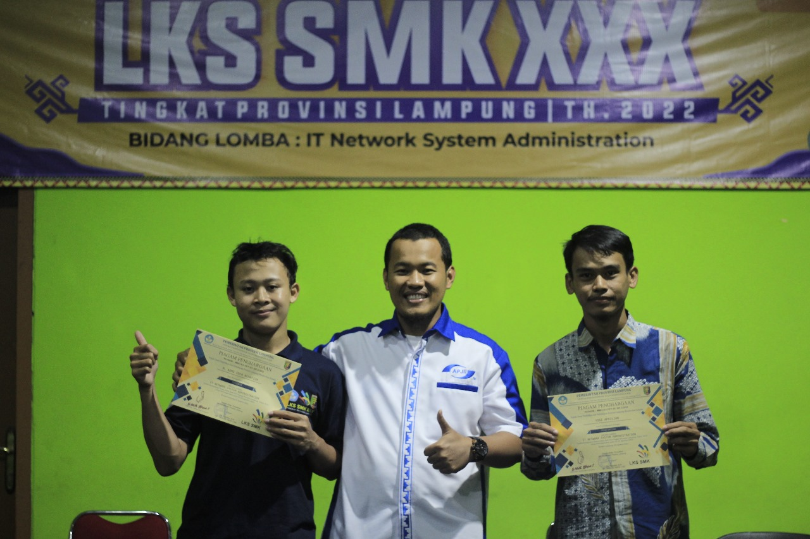
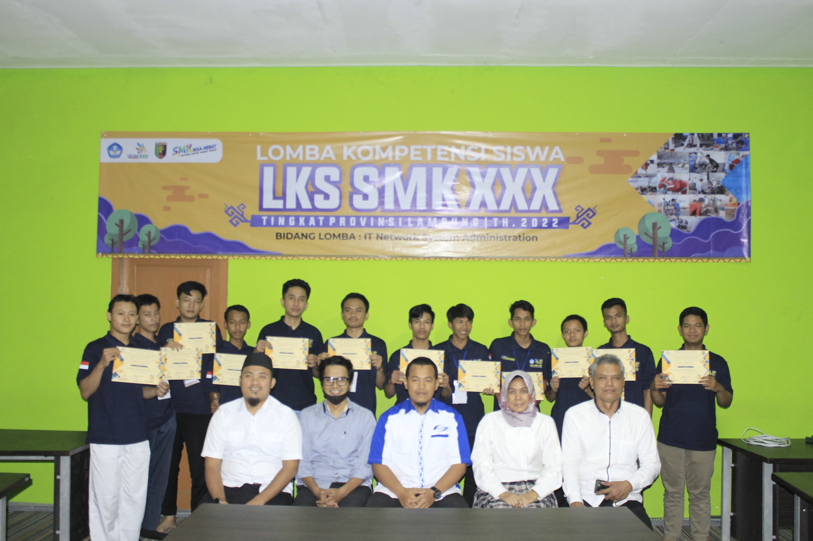
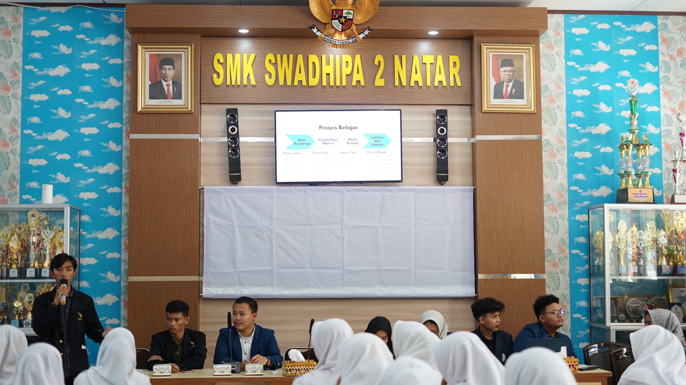
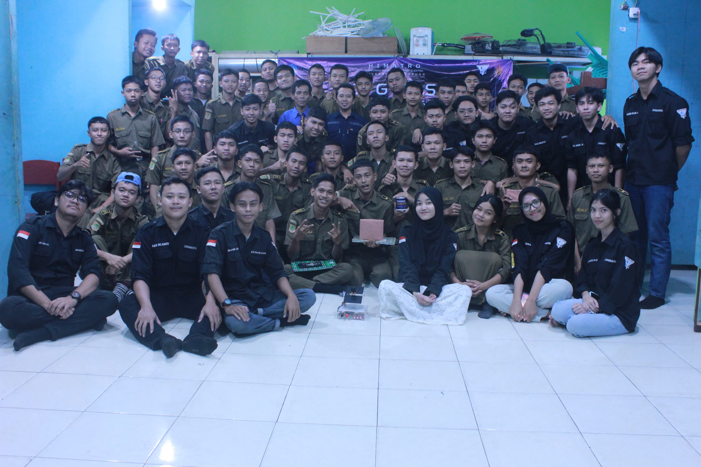
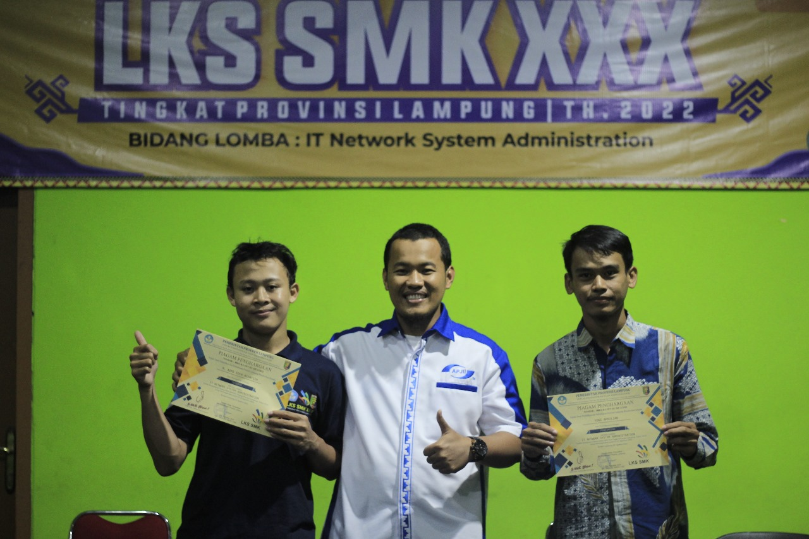
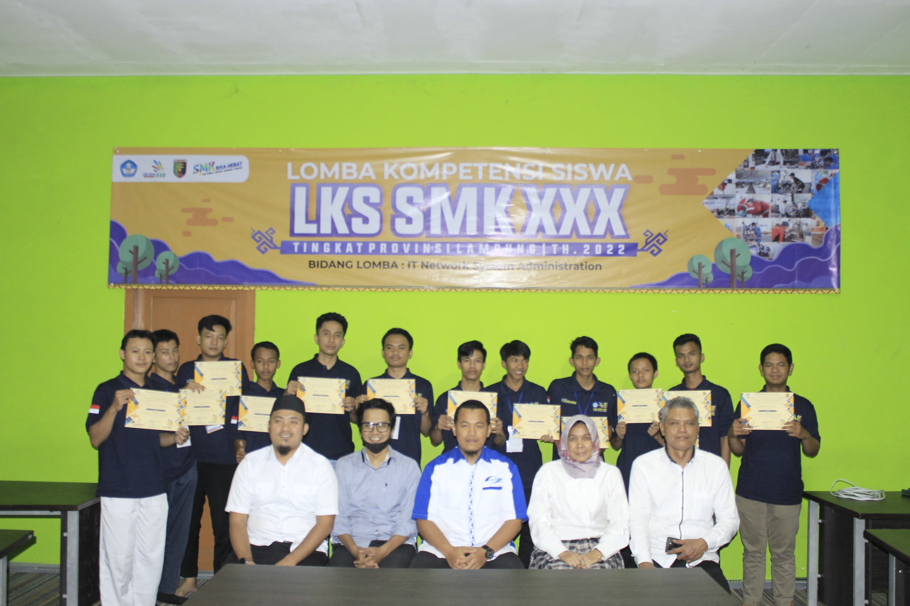
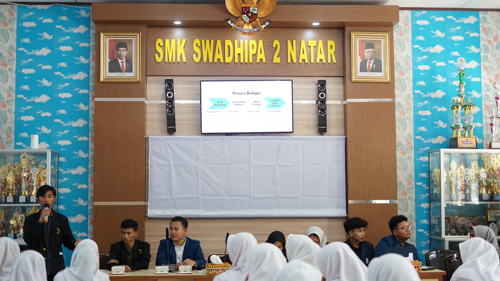
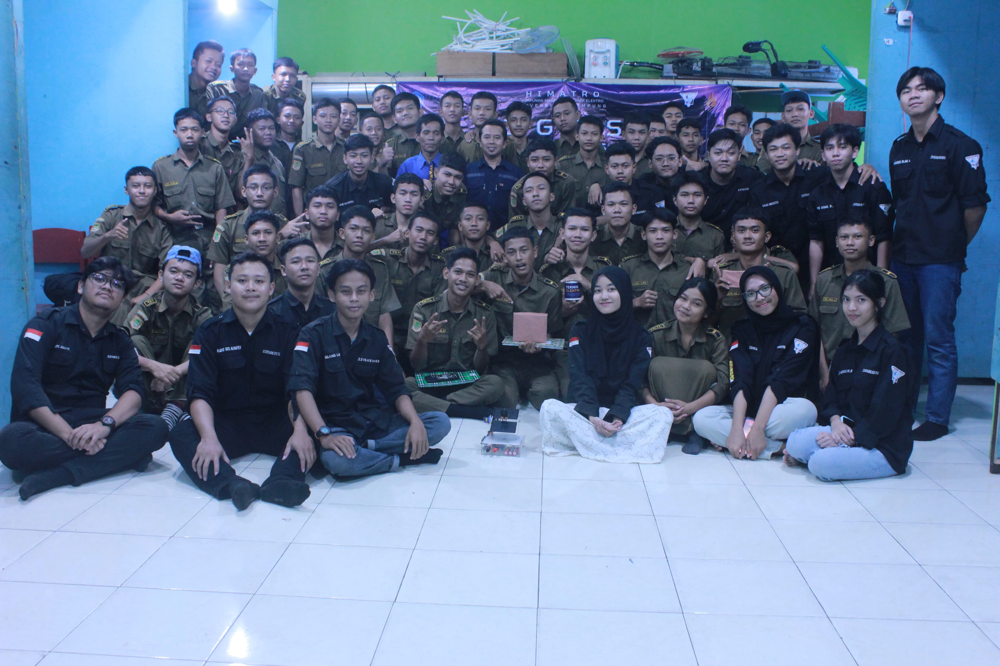

M. Azmi Edfa Alhafizh
Mahasiswa Teknik Informatika - Software & Network Enthusiast
Pelajari Lebih Lanjut.png)
Mahasiswa Teknik Informatika - Software & Network Enthusiast
Pelajari Lebih Lanjut
Saya adalah mahasiswa Teknik Informatika di Universitas Lampung yang memiliki minat dan fokus dalam bidang pengembangan perangkat lunak, administrasi sistem operasi, manajemen basis data, serta pengelolaan jaringan komputer. Saya memiliki ketertarikan yang mendalam dalam mengembangkan solusi berbasis perangkat lunak serta mengelola infrastruktur jaringan secara efisien dan aman. Komitmen untuk terus belajar dan berkembang dalam bidang tersebut menjadi motivasi utama saya untuk terus meningkatkan kompetensi dan memperluas wawasan, baik melalui pembelajaran akademik maupun pengalaman di luar kelas.
Selama studi saya dari SMK hingga saat ini, saya telah mengembangkan keterampilan dalam pemrograman, pengelolaan jaringan, manajemen waktu, dan komunikasi yang baik, yang didukung oleh pengalaman praktis melalui praktik kerja lapangan di PT Mandala Lintas Nusa, kerja lepas di PT Araz Inti Line Cabang Swadhipa, pengajar di TKJ Club SMKS Swadhipa 2 Natar, dan menjadi pembimbing peserta lomba IT Network System Administration tingkat Kabupaten Lampung Selatan dari SMKS Swadhipa 2 Natar, yang berhasil meraih Juara Pertama. Saya juga aktif terlibat dalam organisasi kemahasiswaan, yaitu Himpunan Mahasiswa Teknik Elektro Universitas Lampung, yang telah membantu saya mengembangkan kemampuan kepemimpinan dan kolaborasi sehingga saya berani mengambil posisi sebagai koordinator pada salah satu program kerjanya.
Perjalanan pendidikan saya dari awal hingga saat ini
Teknik Komputer dan Jaringan (TKJ)
2020 - 2023
Teknik Informatika
2023 - Sekarang
Bagaimana saya mengubah tantangan teknis menjadi solusi yang efisien dan andal.
Saya percaya pada solusi yang tidak hanya canggih secara teknis, tetapi juga praktis dan tepat guna. Saya fokus mencari akar masalah dan menyelesaikannya secara efisien, bukan *over-engineering*.
Teknologi jaringan dan perangkat lunak berkembang pesat. Saya berkomitmen untuk terus belajar dan beradaptasi dengan cepat, memastikan infrastruktur yang saya kelola selalu aman dan *up-to-date*.
Infrastruktur IT terbaik adalah yang mendukung kebutuhan pengguna. Saya mengutamakan komunikasi yang jelas dan kolaborasi tim untuk memastikan semua sistem berjalan lancar dan mendukung tujuan bersama.


 







Punya saran, pertanyaan, atau kritik? Jangan ragu untuk mengirimkannya kepada saya.